朝のニュースまとめ
2026年11月4日（水）
🇯🇵 日本の主要ニュース
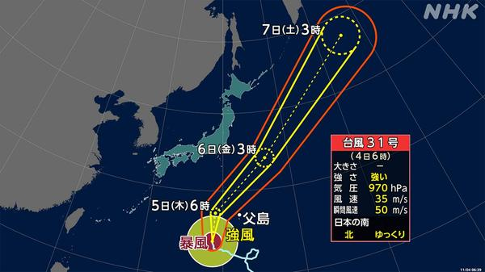
台風31号の影響、5日は関東・伊豆諸島で大雨のおそれ強い台風31号の周辺から湿った空気が流れ込み、関東と伊豆諸島では5日に大雨のおそれがあります。気象庁は土砂災害や低い土地の浸水に注意を呼びかけています。
出典：NHK
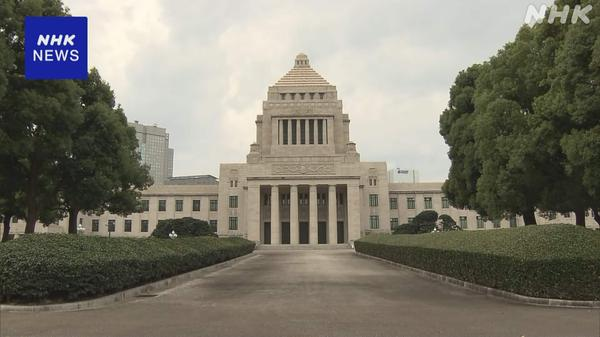
食料品の消費税減税法案、採決時期めぐり与野党の調整が本格化法案は4日も衆院の委員会で審議が続き、与党は衆院通過に向けた採決時期を探っています。日経によると、公明党は新たな給付の詳細が示されていないとして衆院で反対する方向で調整しています。
出典：NHK／日本経済新聞
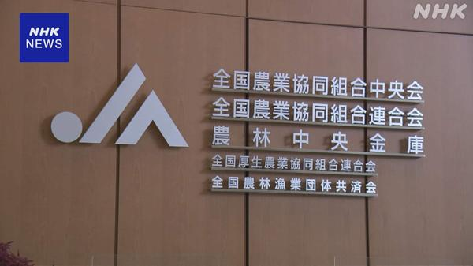
JA全農、来春向け肥料を15％余り値上げ 中東情勢が主因JA全農は来年春の農作業向け肥料の価格を、基準となるタイプで15％余り引き上げると発表しました。中東情勢の緊迫化で原料の調達コストが増えたことが主な理由です。
出典：NHK
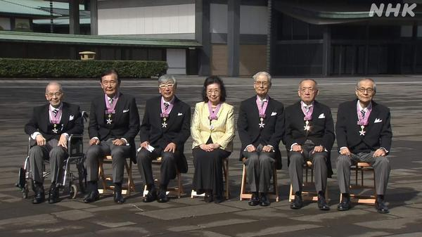
皇居で文化勲章の親授式、ノーベル化学賞の硤合憲三さんら文化の日の3日、皇居で文化勲章の親授式が行われ、ことしのノーベル化学賞に選ばれた硤合憲三さんらに天皇陛下から勲章が贈られました。
出典：NHK
セブンの宅配サービス「セブンナウ」、顧客情報16万件流出
日経によると、セブン－イレブンの宅配サービス「セブンナウ」で顧客情報約16万件が流出しました。企業の情報漏えい発表が相次いでいます。
出典：日本経済新聞
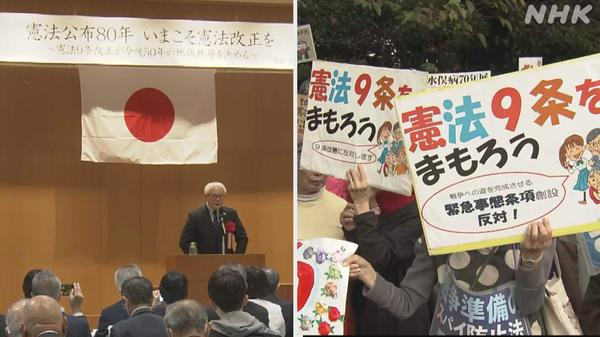
憲法公布80年、改憲派・護憲派がそれぞれ集会いまの憲法が公布されてから80年となった3日、憲法改正を求める人たちと、憲法を守る立場の人たちがそれぞれ集会を開きました。
出典：NHK
ヒグマと衝突のJR宗谷線、4日から全区間で運転再開
特急がヒグマと衝突して脱線し一部区間で運転を見合わせていたJR宗谷線について、JR北海道は復旧作業が終わったとして4日から全区間で運転を再開します。
出典：NHK
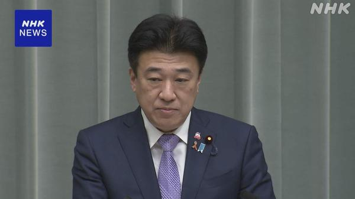
「沖縄政策協議会」6日に開催へ、13年ぶり政府は、沖縄の基地負担軽減や振興を国と県が話し合う「沖縄政策協議会」を6日に開くと発表しました。開催は2013年以来13年ぶりです。
出典：NHK
私立高の納付金負担が2倍に、授業料無償化でも就学継続に懸念
日経によると、NGOの調査で、授業料が無償化されても私立高校の施設費などの納付金負担が2倍になっており、就学を続けられるか懸念が出ています。
出典：日本経済新聞
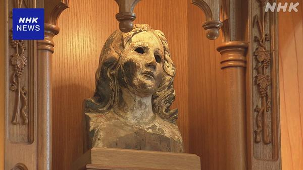
長崎の「被爆マリア像」が渡米へ、核兵器禁止条約の再検討会議に合わせ11月30日から国連本部で開かれる核兵器禁止条約の初の再検討会議に合わせ、浦上天主堂の「被爆マリア像」がアメリカに渡ります。聖職者らは「核兵器廃絶の祈りの旅に」と語りました。
出典：NHK
🌍 世界の主要ニュース
米中間選挙、投票続く 日本時間午前8時から一部で開票
トランプ政権への事実上の審判となる中間選挙は全米で投票が続き、一部の州では日本時間4日午前8時から開票が始まります。共和党が上下両院で多数派を維持できるかが焦点です。
出典：NHK
米、イスラエルへの年40億ドルの軍事支援を終了へ
ロイターとAPによると、トランプ大統領は中間選挙当日に、イスラエルへの年40億ドルの支援を終える方針を発表しました。イスラエルが米国への依存を減らしていることが背景とされています。
出典：ロイター／AP
スペイン運輸相が辞任表明、69人死亡の列車事故受け
スペインのプエンテ運輸相は、マドリード南方で69人が死亡した高速鉄道事故を受けて辞任の意向を表明しました。1年足らずで深刻な事故が2度起きたことを理由に挙げています。
出典：BBC／NHK
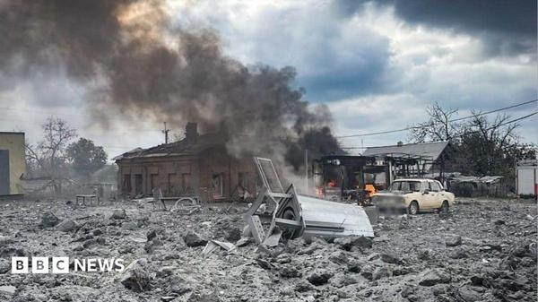
ウクライナ、ロシアの攻撃で24時間に38人死亡ロシア軍が支援物資の配布拠点やホスピス、病院などを攻撃し、24時間で少なくとも38人が死亡しました。ゼレンスキー大統領は、がれきの下にさらに多くの人が残されている可能性を警告しています。
出典：BBC
米国・ロシア・ウクライナ、10〜11日にUAEで3者協議へ
日経によると、和平をめぐる米ロ・ウクライナの3者協議が10〜11日にアラブ首長国連邦で開かれます。ゼレンスキー大統領は首脳会談につながる進展に期待を示しています。
出典：日本経済新聞
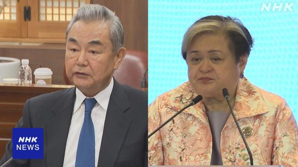
中国とフィリピンの外相が電話会談、対話維持で一致南シナ海をめぐって対立が深まる中、中国とフィリピンの外相が3日に電話会談し、対話を続けることで一致しました。両国とも今月中旬に国際会議を控えています。
出典：NHK
旧統一教会の韓鶴子総裁、保釈取り消し 指定病院を離れ教団施設へ
韓国で実刑判決を受けた旧統一教会の韓鶴子総裁が、治療目的の保釈中に指定病院を離れて教団施設を訪れていたとして、裁判所が保釈を取り消しました。
出典：NHK
エベレストのベースキャンプ近くでヘリ2機が衝突、インド人旅行者が死亡
ネパールのエベレスト・ベースキャンプ付近で、同じ場所に着陸しようとしたヘリコプター2機が地上すれすれで衝突し、インド人旅行者1人が死亡しました。
出典：BBC
🤖 AIニュース
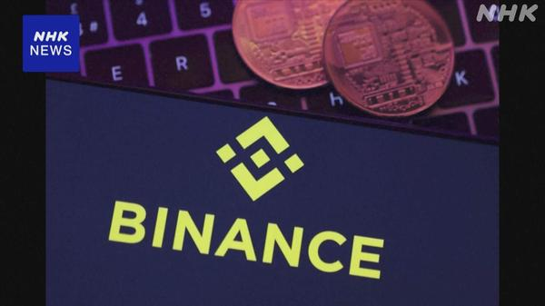
バイナンス、約1兆円の不正流出は「偽面接とAIツール」で侵入と報告暗号資産取引所バイナンスは、ハッカーが偽の求人面接や社内のAIツールなどを使ってシステムに侵入したとする報告書を公表しました。北朝鮮のグループの関与が指摘されています。
出典：NHK
Anthropic、AIの回答が本当にそのモデルから来たか証明する仕組み「FlashProve」を開発
Anthropicは、AIの応答が名乗っているモデルから実際に出力されたものかを誰でも確認できるシステム「FlashProve」に取り組んでいます。
出典：TechCrunch
Google、Geminiに資料作成の「手直し」を減らす新機能
Googleは、生成AIで作った資料の手直しや体裁の統一にかかる手間を減らすため、Geminiの新機能を2つ発表しました。
出典：ITmedia
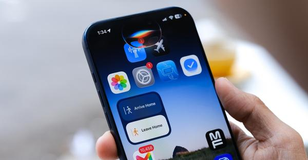
Apple、Siri AIがサードパーティー製アプリを操作可能にAppleは、Siri AIがほかの会社のアプリをまたいで操作できるようにしました。カレンダーやメール、メッセージなど純正アプリでも対応を広げています。
出典：The Verge
OpenAI「ChatGPTは検索でGoogleに追いつきつつある」
OpenAIによると、ChatGPTが処理する検索クエリはGoogleの約5分の1の規模に達しています。「ググる」の代わりに「Chatに聞く」が広がっていると主張しています。
出典：The Verge
Netflix、気分に合わせて作品を勧める「AI Discover」タブを導入
NetflixのテレビアプリにAIで作品を探す「AI Discover」タブが加わります。最初の機能では、いまの気分を伝えるとおすすめが表示されます。
出典：TechCrunch
Google、学校がAIを無効にすると検索も使えない仕様に
Googleは学校がAIツールを無効化できるようにしますが、検索にAIが組み込まれたため、AIを完全に止める学校ではGoogle検索も使えなくなります。
出典：TechCrunch
AI推論のFal、評価額160億ドルに倍増
創業5年のAI推論スタートアップFalは、Bessemer主導で13億ドルを調達し、評価額が160億ドルに倍増しました。推論需要の急増が背景です。
出典：TechCrunch
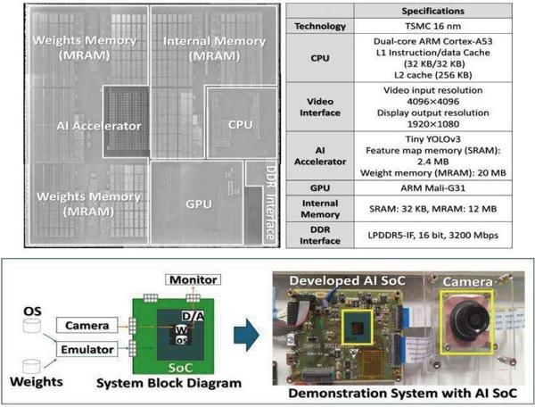
東北大とアイシン、STT-MRAM搭載のAIチップを開発東北大学とアイシンは、不揮発性メモリのSTT-MRAMを搭載したAIチップを開発しました。16nmプロセスでは世界初としています。
出典：MONOist（ITmedia）
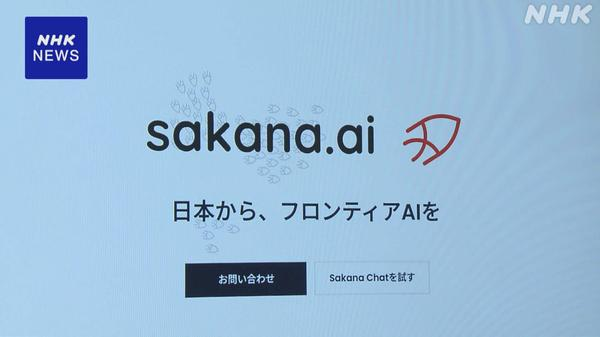
インフラや防衛向けに「国産AI」の開発進むAIの活用がインフラや防衛分野に広がる見込みの中、Sakana AIなど国内企業が基盤モデルから手がける「国産AI」の開発が進んでいます。小泉防衛相も防衛省のAI活用方針を見直す考えを示しました。
出典：NHK
💻 PC・ガジェットニュース
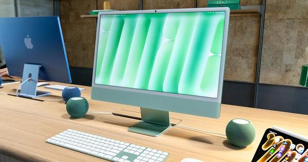
新型iMac（M6）ハンズオン、2年ぶりの更新で何が変わった？M6チップを搭載した2年ぶりのiMacの実機レビューです。デザインは前モデルと同じで、性能向上やAI処理能力を中心に解説しています。
出典：ギズモード・ジャパン
Sonos、独自音声アシスタント「27voice」を11月6日から先行提供
Sonosはアプリを大きく更新してプリセット機能を追加し、新しい音声アシスタント「27voice」の順番待ち登録を11月6日に始めます。
出典：The Verge
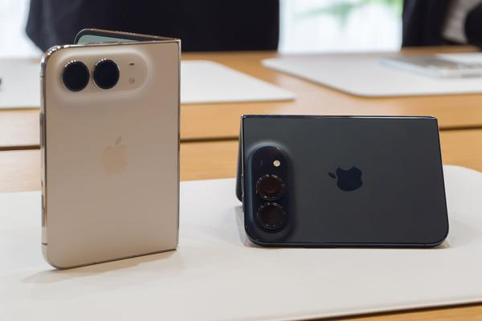
折りたたみ「iPhone Duo」、アプリ最適化が遅れる理由石川温氏のコラムです。発売から10日たったiPhone Duoへの賛否の声を受け、アプリの最適化が遅れる背景と2027年への展望を解説しています。
出典：ケータイ Watch
ahamoが12月から新料金、実質165円値上げでも得する人は？
ahamoは12月から月40GB／60GB／120GBの3段階制になり、実質165円の値上げです。使い方ごとの損得と他社との比較をまとめています。
出典：ITmedia Mobile
「Xiaomi 18 Pro」シリーズ、11月に世界展開
Xiaomi Japanは、背面に2.7型の画面を持つ「Xiaomi 18 Pro」シリーズを11月に世界展開すると明らかにしました。日本発売を求める声も上がっています。
出典：ITmedia Mobile
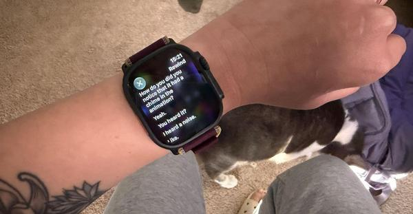
Apple Watchの新機能「Audio Intelligence」を試したwatchOS 27.3ベータで、会話を巻き戻して聞ける「Live Rewind」や要約する「Siri Recap」が、Apple Watch Series 12とUltra 4に追加されました。
出典：The Verge
ミュンヘン市が再びオープンソースへ、欧州で進む「脱Microsoft」
かつてOSS導入を断念したドイツのミュンヘン市が、再びオープンソースの活用にかじを切っています。欧州各地の脱Microsoftの動きを解説しています。
出典：ITmedia PC USER
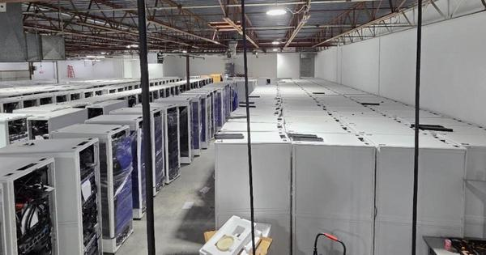
eBayにNVIDIA A100を9600基、約94億円で出品大規模クラウドで使われていたA100搭載サーバーラック300台が、eBayに約94億円でまとめて出品され話題になっています。
出典：ギズモード・ジャパン
🔥 Xのトレンド（日本）
ジャンルで絞らず上位20件を掲載。「未確認」はX上の投稿だけを根拠にしたもので、報道機関による裏付けはありません。
1. #いい推しの日
11月4日は「いい（11）推し（04）」の語呂合わせで「いい推しの日」。アイドルやVTuber、キャラクターなど自分の推しの写真やイラストを投稿して感謝を伝える人が相次いでいます。
⚠ 未確認（X情報のみ）

マクドナルドの三角チョコパイ白の新作「ホワイトチョコ＆カスタード」が4日から発売。このハッシュタグを付けてリプライするとマックカードが当たるキャンペーンで投稿が急増しています。
出典：日本マクドナルド公式X
4. #ヒビケア
ハンドクリーム「ヒビケア」の新TVCM（岸優太さん出演）が4日朝に公開され、ブランドサイトでは限定Web動画も公開中。公式投稿は7000以上のいいねを集めています。
出典：ヒビケア公式X
6. アンメット続編
杉咲花さん主演のドラマ「アンメット ある脳外科医の日記」の続編が、2027年1月期にカンテレ・フジテレビ系の月10枠で放送されることが決まりました。前作のラストから続く「その後」を描きます。
出典：モデルプレス、コミックナタリーなど
7. クーニャ
CLでマンチェスター・ユナイテッドがローマに0-2から3-2で逆転勝ち。マテウス・クーニャが83分と86分にゴールを決めた一方、その後退場となり「クーニャ劇場」と話題に。ユナイテッドは公式戦10試合ぶりの勝利です。
⚠ 未確認（X情報のみ）
8. #めざましテレビ
4日の「めざましテレビ」では、=LOVEの髙松瞳さんが11月のマンスリーエンタメプレゼンターとして初登場。前日の不具合のお詫びで「めざましじゃんけん」が全戦Wポイントになったことも話題に。
⚠ 未確認（X情報のみ）
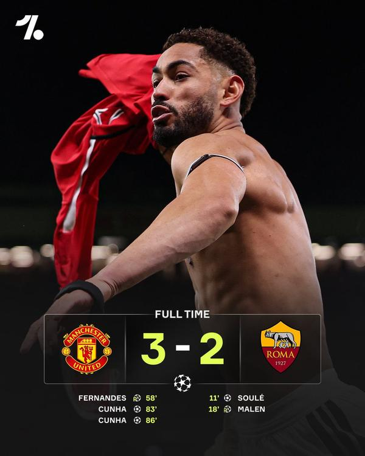
10. レイシー
ユナイテッドのローマ戦で途中出場したアカデミー出身のレイシーが流れを変えたと評価され、「アマドよりレイシーを先発に」という声が上がっています。
⚠ 未確認（X情報のみ）
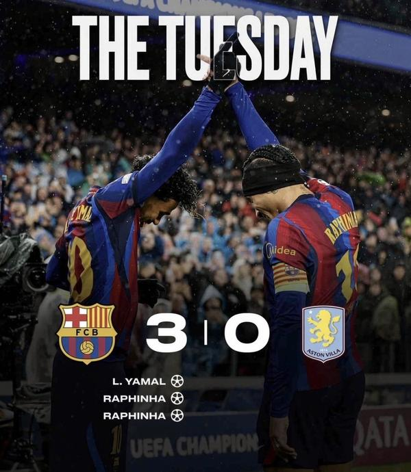
11. カンセロ
CLでバルセロナがアストン・ヴィラに3-0で快勝。カンセロがサイドを突破して右足アウトサイドで送ったクロスからラフィーニャの3点目が生まれ、攻撃面が称賛されています（守備面には厳しい声も）。
⚠ 未確認（X情報のみ）
15. 穴あき靴下
ヒビケアの新CMシリーズの1本「穴あき靴下がびっくり大変身！」篇で、岸優太さんが穴の開いた靴下を掃除に使う方法を紹介。YouTubeの公式動画が共有されています。
⚠ 未確認（X情報のみ）
17. キャッシュカード全廃
三菱UFJが新たに開業する銀行でキャッシュカードを全廃し、スマホで入出金できるようにすると日経が報道。「思い切った」「スマホなら安全なのか」と賛否が出ています。
出典：日本経済新聞
Grok Bot がまとめました。